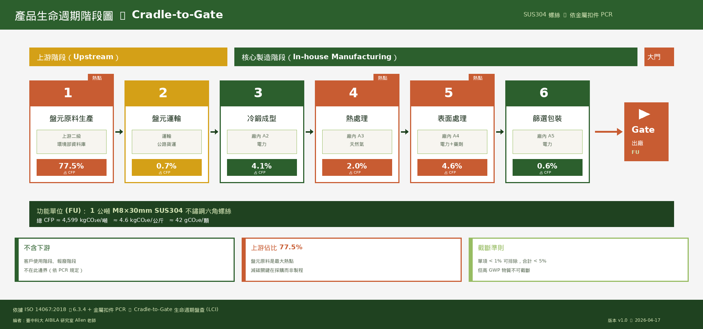
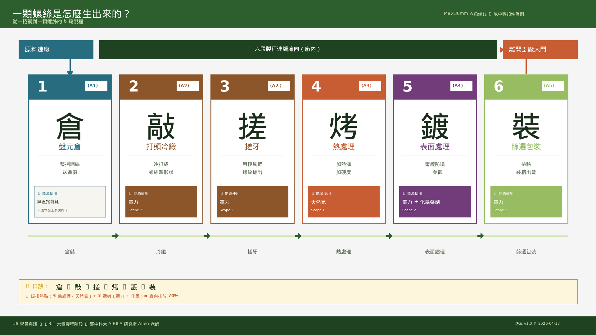
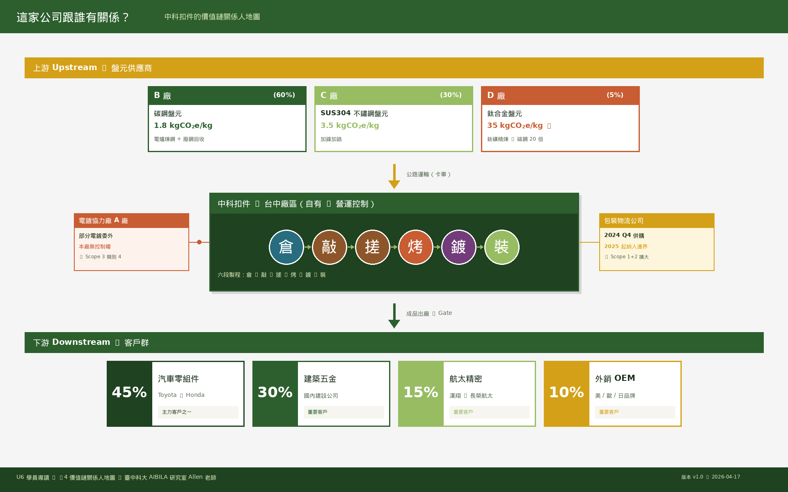
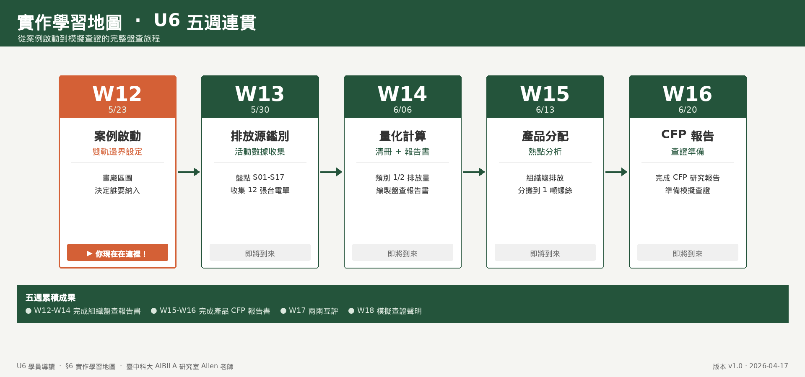
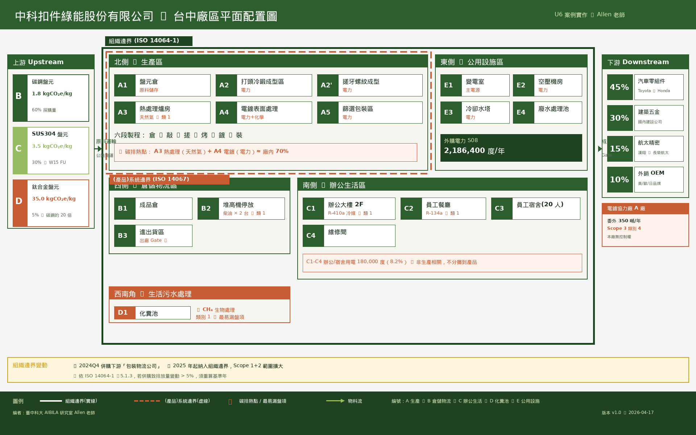

文件用途： 本文件為 U6 案例實作單元（W12–W16）之學員導讀，用平易的敘事介紹「中科扣件」這家虛擬公司與金屬扣件製程，協助同學在進入 ISO 14064-1／14067 技術實作前，先對案例建立直覺理解。
建議閱讀時機： W12 上課前 30 分鐘預習；或作為分組討論暖身材料。
編者： 臺中科大 AIBILA 研究室 Allen 老師 版本： v1.0 日期： 2026-04-17
搭配文件： 請切換至上方「案例背景」頁籤查看技術資料。
你現在坐的椅子、用的筆電、騎的機車、住的房子……有一樣東西它們全都用到了——扣件。
螺絲、螺帽、墊圈——這些看似不起眼的小五金，是所有工業產品「組裝」的基本單元。一台汽車大約用到 3,000～4,000 顆螺絲，一架波音 747 更用到約 300 萬顆。
臺灣是全球第三大扣件出口國（僅次於中國大陸與德國），主要產地集中在台中、彰化、高雄。其中台中地區是「航太／精密扣件」的重鎮，高雄則以大宗建築扣件為主。
那為什麼我們要盤查「一顆螺絲」的碳排放？ 因為：
這就是我們這門課要做的事：學會用國際標準把一家扣件廠的碳排攤在陽光下。
⚠️ 提醒：中科扣件是虛擬教學案例，但所有數據設定皆轉化自環境部 113 年版指引中「範例金屬盤元廠」，可反映真實產業樣貌。
| 項目 | 內容 |
|---|---|
| 成立 | 2005 年（歷經 20 年） |
| 地點 | 台中市單一廠區（約 2,480 坪） |
| 員工 | 85 人（生產 60 人、辦公 20 人、外包駐廠 5 人） |
| 年產能 | 4,800 噸／年 |
| 主要客戶 | 汽車零組件 45%、建築五金 30%、航太與精密機械 15%、外銷 OEM 10% |
| 主力產品 | 碳鋼扣件 75%、不鏽鋼扣件 20%、航空鈦合金扣件 5% |
公司在 2023 年更名，把「綠能」放進名字裡，是因為最大客戶 Toyota 要求供應商在 2030 年前達到「碳中和螺絲」。公司董事長決定：要嘛轉型淨零，要嘛被踢出供應鏈。
這個設定，讓你們這個班級變成：
「董事長臨危授命的永續 Task Force」。
你們接下來 5 週（W12–W16）的任務，是以「準顧問／準查證員」的身份，幫中科扣件完成：
並在 W17 模擬查證、W18 取得「模擬查證聲明書」——這就是一份可以遞交給 Toyota 採購部的淨零證明。

從盤元原料到出廠的 6 個階段 + Gate（上游 77.5% + 運輸 0.7% + 廠內 11.3% + 其他）
以中科扣件最主流的「M8×30mm 六角螺絲」為例，從一捲鋼到一顆螺絲的過程如下：

圖 3.1.1：六段製程視覺流程圖（原料進廠 → 倉 → 敲 → 搓 → 烤 → 鍍 → 裝 → 離廠）
這裡放什麼？ 從上游煉鋼廠運來的「盤元」——一種外觀像粗鋼絲的捲狀鋼材，直徑約 5–12mm、每捲約 2 噸重。
排碳來源？ 倉儲本身幾乎不排碳，但盤元本身在上游煉鋼時已排了大量碳（這就是 W15 要處理的「Scope 3 類別 4 上游排放」——隱藏的 80%）。
生活類比： 像你去大賣場買「生麵糰」，麵糰本身的生產（種小麥、磨麵粉）已經排碳了，你只是把它搬回家。
這裡做什麼？ 把盤元切成一段段「素材」，在常溫下用高壓機具「一次敲擊」把金屬擠壓變形，形成螺絲的「頭」（六角形、十字形等）。
關鍵設備： 冷鍛成型機（Cold Forming Machine），一台能敲 200 下／分鐘。
為什麼是「冷」鍛？ 因為不加熱直接擠壓——省能源、省時間、精度高。
排碳來源？ 主要是電力（驅動鍛造機）。這是本廠 類別 2（外購電力） 的大戶。
生活類比： 像用印章用力蓋在黏土上，黏土變形留下凹凸紋路。
這裡做什麼？ 用兩片有螺紋凹槽的「搓牙板」，把 ② 打完頭的螺絲素材夾在中間來回滾壓，擠壓出螺紋。
為什麼不用「車削」？ 車削會切掉金屬（浪費材料）；搓牙是「擠壓變形」不產生廢料，且螺紋強度更高。
排碳來源？ 電力（驅動搓牙機）。
生活類比： 像拿兩張搓衣板夾一條麵團來回搓，麵團表面會留下搓衣板的紋路。
這裡做什麼？ 把螺絲送進天然氣爐（約 800–900°C），經過「淬火（急速冷卻）」→「回火（再加熱緩慢冷卻）」的流程，讓金屬結晶結構改變，達到所需硬度與韌性。
關鍵設備： 連續式網帶熱處理爐（本案有 2 台）。
排碳來源？ 天然氣燃燒（本廠 類別 1 直接排放 的最大項）。每年消耗約 92,500 立方米天然氣，約當 174 噸 CO₂e。
生活類比： 像烤蛋糕——麵糊進去軟軟的，烤出來就定型變硬。
這裡做什麼？ 螺絲浸入多道化學藥劑槽（酸洗、電鍍鋅、鈍化、封孔……），表面鍍上一層保護膜。
關鍵設備： 連續式電鍍線，有 8 個處理槽、每槽由電力加熱攪拌。
排碳來源？ 電力（驅動泵浦、加熱槽液、電鍍電流）。也是本廠類別 2 的大戶。
環境議題： 本段產生「廢水」需進廢水處理池（E4），且使用化學藥劑（如鎳、鉻，但本案為環保鋅系）。
生活類比： 像家具噴漆——素面家具經過多道處理才變成有光澤有保護的成品。
這裡做什麼？ 用光學篩選機把有瑕疵（頭偏、牙紋不全、尺寸不合）的螺絲剔除，合格品依訂單重量裝箱（通常 25kg／箱）、貼標、堆疊上棧板。
排碳來源？ 電力（篩選機、包裝機）為主，少量紙箱與膠帶耗材。
生活類比： 像超市的水果分級——良品入盒銷售，次級品轉去別的用途。
「倉（①）→ 敲（②）→ 搓（③）→ 烤（④）→ 鍍（⑤）→ 裝（⑥）」
你能指出哪一站排最多碳？（答：④ 熱處理用天然氣 + ⑤ 電鍍用電力，兩者共佔廠內排放的約 70%）
一家扣件廠從來不是孤島。下圖是中科扣件的價值鏈關係人地圖：

圖 4.1：從上游盤元供應商（B/C/D 廠）經中科扣件台中廠區（含六段製程、委外協力廠、已併購之包裝物流公司）到下游四大客戶的完整價值鏈關係圖
💡 觀察： 同樣是「一公斤金屬」，鈦合金的上游碳排是碳鋼的約 20 倍。這就是為什麼航太扣件雖然產量小，但碳足跡特別值得關注。
請在閱讀本文件後，先試著思考以下 5 題。這些問題會在 W12–W16 課程中逐步解答。
Q1. 如果你是中科扣件的永續長，你會先做組織碳盤查還是產品碳足跡？為什麼？
Q2. 中科扣件員工餐廳的冷氣用電，要算在組織碳盤查的哪一類？要算進航空鈦合金螺絲的碳足跡嗎？
Q3. 為什麼化糞池會出現在碳盤查中？它排什麼氣體？
Q4. 中科扣件的熱處理爐使用天然氣，堆高機使用柴油，這兩者都算類別 1 嗎？有什麼差別？
Q5. 一顆鈦合金螺絲和一顆碳鋼螺絲，哪顆碳足跡高？主因是什麼？

圖 6.1：U6 案例實作五週進度地圖（W12 案例啟動 → W16 CFP 報告），當前在 W12
W17、W18：各組交叉互助稽核、複查修正、發放模擬查證聲明書。
① 你不是要「寫答案」，而是要「建立證據鏈」。
碳盤查的精髓不在算對答案（數字可以修），而在每一筆數據都能證明「從哪來」。一張台電收費單比一個精準的小數點更重要。
② ISO 條文不是背誦題，是「溝通語言」。
遇到爭議時，能指著條文說「依 ISO 14064-1 §5.1 營運控制權法，這個設施應納入」——這就是顧問與查證員的對話方式。我們要練習的是這種精準引用條文的能力。
③ 扣件產業的碳管理，是臺灣出口產業的縮影。
你們在中科扣件學到的方法，以後都能用在：汽車零件廠、工具機廠、塑膠射出廠、電子製造廠……只要面對 CBAM、客戶永續要求，就是同一套邏輯。
在 W12 上課前，請試做以下任一項：
小結： 中科扣件是一家被客戶逼著轉型的 Tier-2 製造業——這不是特例，而是臺灣 10 萬家製造業的縮影。你們在 U6 學到的方法，不只過關 iPAS 初級考試，更是未來在職場上能實際派上用場的工具。
準備好了嗎？W12 見！
文件用途： 本文件為淨零碳管理實作課程「U6 案例實作單元（第 12–16 周）」之共通案例背景，提供後續所有周次實作所需的組織資料、設施清冊、活動數據、係數引用與分配邏輯。請各週講義／簡報／實作表單一致引用本文件中的數據，避免各周不一致。
最後更新： 2026-04-17 版本： v1.1 編者： 臺中科大 AIBILA 研究室 Allen 老師
使用對照：
- W12（5/23 案例啟動與雙軌邊界設定）：引用第 1、2、3、4 節
- W13（5/30 排放源鑑別與數據收集）：引用第 4、5、6 節
- W14（6/06 量化計算、清冊、報告書與查證準備）：引用第 5、6、7、8 節
- W15（6/13 產品數據分配與熱點分析）：引用第 3、6、9 節
- W16（6/20 產品碳足跡報告書編製與查證準備）：引用第 3、9、10 節
本案例為教學用虛擬案例，但所有數據設定均依循以下台灣官方公告之指引與排放係數，以確保學生所學可直接銜接實務工作。
| 來源 | 說明 | 使用於 |
|---|---|---|
| 經濟部能源署《113 年度電力排碳係數》（2025/4/14 公告）：0.474 公斤 CO₂e/度 | 公用售電業總銷售電量為基準，較 112 年 0.494 下降約 4% | 類別 2 外購電力計算（W14） |
| 環境部《溫室氣體排放係數管理表 6.0.4 版》（2024/2/5 公告） | 天然氣、柴油、化糞池、冷媒等係數；採 IPCC AR5 GWP 值 | 類別 1 燃燒與逸散排放計算（W14） |
| 環境部《溫室氣體排放量盤查作業指引 113 年版》 | 邊界設定、排放源鑑別、量化、DQR、清冊、報告書撰寫之官方流程 | W12–W14 全段實作 |
| 經濟部產業發展署《金屬製品產業碳盤查指引》（2023/10 發布） | 扣件、水五金、模具、手工具業別專用盤查方法與熱點分析 | W12、W15 |
| 環境部產品碳足跡資訊網（cfp.moenv.gov.tw）之 PCR | 金屬扣件 / 螺絲相關之產品類別規則 | W15、W16 |
| ISO 14064-1:2018 | 組織層級溫盤國際標準 | W12–W14 |
| ISO 14067:2018 | 產品碳足跡國際標準 | W15–W16 |
| IPCC AR5 GWP（100 年）：CO₂ = 1、CH₄ = 28、N₂O = 265 | 本案例指定採用之全球暖化潛勢值 | 全程計算 |
重要提醒： 本案例統一採 IPCC AR5（非 AR6），理由為環境部 113 年版指引強制要求。若學生引用其他 GWP 來源計算結果將無法通過教學查驗。
| 項目 | 內容 |
|---|---|
| 公司名稱 | 中科扣件綠能股份有限公司 |
| 英文名稱 | JKF Green Fastener Co., Ltd.（教學案例，非真實公司） |
| 統一編號 | 99999999（虛擬） |
| 負責人 | 陳碳中（虛擬） |
| 設立日期 | 2005 年 3 月 |
| 資本額 | 新台幣 3 億元 |
| 主要業務 | 金屬扣件（螺絲、螺帽、墊圈、特殊規格扣件）之打頭冷鍛、搓牙成型、熱處理、表面處理、篩選包裝與銷售 |
| 主要客戶 | 汽車零組件（45%）、建築五金（30%）、航太與精密機械（15%）、外銷 OEM（10%） |
| 員工人數 | 85 人（生產 60 人、辦公 20 人、駐廠外包 5 人） |
| 年產能 | 約 4,800 噸／年（2024 年實際產量 4,560 噸） |
| 廠區 | 台中單一廠區，無海外子公司或合資事業 |
| ERP 系統 | 2024 年 1 月導入，活動數據自該月起可完整追溯 |
| 關聯廠商 | ① 自有「打頭工廠」（A2 冷鍛成型區）② 「電鍍協力廠」A 廠（部分表面處理委外）③ 2024 年底收購「包裝物流公司」（納入組織邊界評估情境，見 §12.1） |
中科扣件台中廠區總佔地約 8,200 平方公尺（約 2,480 坪），分為五大功能區：

圖 3.1：中科扣件台中廠區平面配置圖（含組織邊界實線、(產品)系統邊界虛線、上下游供應鏈關係人）
分區與編號對照：
- A 區（北側 · 生產區）：A1 盤元倉、A2 打頭冷鍛、A2' 搓牙、A3 熱處理（天然氣）、A4 電鍍、A5 篩選包裝
- B 區（西側 · 倉儲物流）：B1 成品倉、B2 堆高機停放（柴油×2）、B3 進出貨區（Gate）
- C 區（南側 · 辦公生活）：C1 辦公大樓、C2 員工餐廳、C3 員工宿舍、C4 維修間
- D 區（西南角 · 生活污水）：D1 化糞池
- E 區（東側 · 公用設施）：E1 變電室、E2 空壓機房、E3 冷卻水塔、E4 廢水處理池
- 廠外關係人：電鍍協力廠 A 廠、盤元供應商 B/C/D、包裝物流公司（2024Q4 併購）
採用方法： 營運控制權法（Operational Control Approach）
選用理由：
1. 中科扣件為單一法人、單一廠區，無海外子公司或合資事業，合併邏輯明確。
2. 環境部事業溫室氣體盤查登錄作業多採營運控制權法，便於未來合規申報。
3. 廠內租賃堆高機、委外電鍍加工（後述）皆由中科扣件實際管理營運，責任歸屬清晰。
4. 控制權證明（廠房所有權狀、租賃合約、設備清冊）齊備，便於查證。
組織邊界涵蓋： 上述全部 A～E 區設施、員工宿舍、化糞池、租賃堆高機（因由本廠實際調度使用）。
採用邊界： 搖籃到大門（Cradle-to-Gate），依金屬扣件 PCR 規範。
生命週期階段：
圖 3.3：SUS304 不鏽鋼螺絲 Cradle-to-Gate 生命週期階段圖（各階段下方百分比為占總 CFP 4,599 kgCO₂e/噸 的比例）
| 設施／排放源 | 組織邊界（14064-1） | 產品邊界（14067） | 備註 |
|---|---|---|---|
| 熱處理爐天然氣 | ✓ 類別 1 | ✓ 分攤 | 產品製程核心 |
| 冷鍛成型機電力 | ✓ 類別 2 | ✓ 分攤 | 依產量比 |
| 電鍍線電力 | ✓ 類別 2 | ✓ 分攤 | 依設備時數 |
| 堆高機柴油 | ✓ 類別 1 | 部分分攤 | 僅廠內物流段 |
| 外購電力（辦公） | ✓ 類別 2 | ✗ 不分攤 | 非生產相關 |
| 員工宿舍能源 | ✓ 類別 2 | ✗ 不分攤 | 生活設施 |
| 化糞池 CH₄ | ✓ 類別 1 | ✗ 不分攤 | 生活污水處理，非製程 |
| 中央空調冷媒 | ✓ 類別 1 | ✗ 不分攤 | 辦公區為主 |
| 盤元原料（上游） | ✗ 不納入 | ✓ 必含 | PCR 強制要求，二級數據 |
| 原料運輸（上游） | ✗ 不納入 | ✓ 必含 | 從供應商到廠 |
依 ISO 14064-1:2018 §5.2.4，將組織內各排放源分類至 6 大類別。
| 編號 | 排放源 | 能源/物質 | 排放機制 | 位置 | 佐證文件 |
|---|---|---|---|---|---|
| S01 | 熱處理爐×2 台 | 天然氣 | 固定燃燒 | A3 爐房 | 大台中瓦斯公司收費單 |
| S02 | 堆高機×2 台（柴油） | 柴油 | 移動燃燒 | B2 停放區（移動式） | 加油卡明細 |
| S03 | 發電機組（備用） | 柴油 | 固定燃燒（僅停電時） | E1 變電室旁 | 加油卡、運轉紀錄 |
| S04 | 中央空調冷媒（R-410a） | HFC-410a | 製冷設備逸散 | C1 辦公大樓屋頂 | 冷媒維修報單 |
| S05 | 冷鏈冰箱（餐廳/休息室） | HFC-134a | 製冷設備逸散 | C2 員工餐廳 | 冷媒維修報單 |
| S06 | 化糞池 | 生活污水（BOD） | 厭氧分解生成 CH₄ | D1 化糞池 | 服務人次統計 |
| S07 | 滅火器（CO₂ 型） | 液態 CO₂ | 維護/誤觸洩漏 | 全廠分布 | 汰換紀錄 |
| 編號 | 排放源 | 能源/物質 | 位置 | 佐證文件 |
|---|---|---|---|---|
| S08 | 外購電力（全廠總電表） | 市電 | E1 變電室 | 台電高壓用戶收費通知 |
| 編號 | 排放源 | 說明 | 佐證文件 |
|---|---|---|---|
| S09 | 原料運輸（上游 → 廠） | 盤元供應商交貨卡車 | 進貨單、運輸距離表 |
| S10 | 成品運輸（廠 → 客戶） | 成品配送（本廠付費部分） | 物流發票 |
| S11 | 員工通勤 | 員工上下班（問卷抽樣估算） | 通勤問卷 |
| S12 | 出差 | 商務出差（含高鐵、飛機） | 差旅請款單 |
| 編號 | 排放源 | 說明 | 佐證文件 |
|---|---|---|---|
| S13 | 盤元原料之上游排放 | 從煉鋼到盤元製造（二級數據） | 採購發票、環境部碳足跡資料庫 |
| S14 | 委外電鍍加工排放 | 部分特殊表面處理委外 A 廠 | 委外合約、A 廠聲明書 |
| S15 | 資本財（設備、建物） | 冷鍛機、爐子、廠房攤提 | 資產清冊 |
本案例基準年暫不盤點（金屬扣件下游使用階段，需客戶提供資訊，基準年先建立範疇）。
| 編號 | 排放源 | 說明 |
|---|---|---|
| S16 | 辦公紙張、耗材 | 二級數據估算 |
| S17 | 廢棄物委外清運 | 清運公司聲明書 |
以下數據已去識別化並調整為教學合理範圍，學生應在 W13 收集「憑證文件」證明每一筆活動數據之來源，在 W14 執行量化計算。
| 編號 | 排放源 | 2024 年活動數據 | 單位 | 資料來源 |
|---|---|---|---|---|
| S01 | 熱處理爐天然氣 | 92,500 | Nm³/年 | 大台中瓦斯 12 張月繳單合計 |
| S02 | 堆高機柴油 | 4,320 | 公升/年 | 加油卡 48 筆明細合計 |
| S03 | 備用發電機柴油 | 85 | 公升/年 | 2024 年僅一次停電演練 |
| S04 | R-410a 冷媒補充 | 3.5 | 公斤/年 | 冷媒維修商報單（3 次補充） |
| S05 | R-134a 冷媒補充 | 0.4 | 公斤/年 | 餐廳冰箱維修紀錄 |
| S06 | 化糞池 | 85 人 × 250 天（在廠日數） | 人‧日/年 | HR 出勤系統 |
| S07 | 滅火器 CO₂ 洩漏 | 0（無汰換、無誤觸） | 公斤/年 | 汰換紀錄空白 |
| 編號 | 排放源 | 2024 年活動數據 | 單位 | 資料來源 |
|---|---|---|---|---|
| S08 | 外購電力 | 2,186,400 | 度/年（kWh） | 台電高壓用戶 12 張月繳單合計 |
電力細分（ERP 用電分析報告）：
| 分區 | 2024 年用電 | 占比 |
|---|---|---|
| 冷鍛成型區（A2） | 680,000 度 | 31.1% |
| 熱處理爐房輔助（A3，鼓風機、控制板） | 95,000 度 | 4.3% |
| 電鍍表面處理線（A4） | 780,000 度 | 35.7% |
| 篩選包裝區（A5） | 120,000 度 | 5.5% |
| 空壓機房（E2） | 210,000 度 | 9.6% |
| 冷卻水塔（E3） | 85,000 度 | 3.9% |
| 辦公大樓、餐廳、宿舍（C1–C3） | 180,000 度 | 8.2% |
| 其他（照明、維修間） | 36,400 度 | 1.7% |
| 合計 | 2,186,400 度 | 100% |
| 編號 | 排放源 | 2024 年活動數據 | 備註 |
|---|---|---|---|
| S09 | 原料運輸 | 7,200 噸·公里（盤元 4,500 噸 × 平均 160 公里） | 供應商距離表 |
| S10 | 成品運輸 | 3,800 噸·公里 | 本廠付運費部分 |
| S11 | 員工通勤 | 估計 92,000 人·公里 | 問卷抽樣推估 |
| S12 | 商務出差 | 16,500 人·公里（含高鐵 12,000、飛機 4,500） | 差旅請款 |
| 編號 | 排放源 | 2024 年活動數據 | 備註 |
|---|---|---|---|
| S13 | 盤元原料採購 | 4,500 噸（碳鋼 3,600、不鏽鋼 900） | 採購發票合計 |
| S14 | 委外電鍍 | 350 噸扣件半成品外送 | 委外合約 |
天然氣（Natural Gas）
| 溫室氣體 | 排放係數 | 單位 | 備註 |
|---|---|---|---|
| CO₂ | 1.8789 | kg/Nm³ | AR5 GWP = 1 |
| CH₄ | 0.0000377 | kg/Nm³ | AR5 GWP = 28 |
| N₂O | 0.0000038 | kg/Nm³ | AR5 GWP = 265 |
柴油（Diesel）
| 溫室氣體 | 排放係數 | 單位 | 備註 |
|---|---|---|---|
| CO₂ | 2.6060 | kg/L | AR5 GWP = 1 |
| CH₄ | 0.000137 | kg/L | AR5 GWP = 28 |
| N₂O | 0.000137 | kg/L | AR5 GWP = 265 |
| 冷媒 | AR5 GWP（100 年） | 備註 |
|---|---|---|
| R-410a（HFC 混合物） | 1,924 | 本案主力冷媒 |
| R-134a（HFC-134a） | 1,300 | 冰箱常用 |
| R-22（HCFC-22） | 1,760 | 舊機型，本案無 |
常見誤用提醒： 部分教材或舊報告仍沿用 AR4 的 GWP 值（R-410a = 2088、R-134a = 1430）。本案統一採 AR5，請學生在 W14 計算時務必核對係數來源註解。
以「人日」為活動數據單位：
| 溫室氣體 | 排放係數 | 單位 |
|---|---|---|
| CH₄ | 0.000038222 | kg/人·日（IPCC 預設值換算） |
| N₂O | 可忽略（通常併入其他污水處理項） | — |
註：化糞池以家戶污水為主，本案員工 85 人 × 年在廠 250 天 = 21,250 人·日。
2024 年用電（113 年度電力排碳係數）：0.474 公斤 CO₂e/度（經濟部能源署 2025/4/14 公告）
跨年提醒： 若計算對象為 2023 年用電，應採 112 年度係數 0.494；若為 2024 年用電則採 113 年度 0.474。本案基準年為 2024，一律採 0.474。
| 運輸類型 | 建議係數（kgCO₂e/噸·公里 或 人·公里） |
|---|---|
| 公路貨運（≤ 16 噸卡車） | 0.192 |
| 高鐵乘車 | 0.0245 kg/人·公里 |
| 飛機（國內線） | 0.148 kg/人·公里 |
| 汽車通勤（平均） | 0.187 kg/人·公里 |
註：上述為教學演示用典型值，實務應以最新版環境部碳足跡資料庫為準。
以下示範三個代表性計算，供 W14 講解用，學生需對所有排放源完成類似計算。
公式：
排放量 (噸 CO₂e) = 92,500 Nm³ × (1.8789 × 1 + 0.0000377 × 28 + 0.0000038 × 265) ÷ 1,000
計算：
- CO₂：92,500 × 1.8789 = 173,798 kg
- CH₄：92,500 × 0.0000377 × 28 = 97.65 kg CO₂e
- N₂O：92,500 × 0.0000038 × 265 = 93.12 kg CO₂e
- S01 小計 ≈ 173.99 噸 CO₂e
公式：
排放量 (噸 CO₂e) = 2,186,400 度 × 0.474 kgCO₂e/度 ÷ 1,000
S08 ≈ 1,036.4 噸 CO₂e
公式：
排放量 (噸 CO₂e) = 3.5 kg × 1924 (AR5 GWP) ÷ 1,000
S04 ≈ 6.73 噸 CO₂e
| 類別 | 2024 基準年排放量（噸 CO₂e） | 占比 |
|---|---|---|
| 類別 1：直接排放 | 約 187 | 15.2% |
| 類別 2：外購電力 | 約 1,036 | 84.3% |
| 類別 3：運輸（選入範疇） | 約 3–5 | 0.3–0.4% |
| 組織總排放（類別 1+2） | 約 1,223 噸 CO₂e | 100% |
備註： 上述為預估彙總，W14 由學生逐項計算後彙總應接近此範圍。若差異 > 5% 應檢討活動數據或係數引用。
依 ISO 14064-1 §8.3，對主要排放源執行數據品質評分。採 5 級制（1 = 最高品質、5 = 最低品質）。
| 排放源 | 可靠性 | 完整性 | 時間相關性 | 地理相關性 | 技術相關性 | 綜合 | 評語 |
|---|---|---|---|---|---|---|---|
| S01 天然氣 | 1（水號直讀） | 1 | 1（當年） | 1 | 1 | 1.0 | 憑證齊、優質 |
| S02 堆高機柴油 | 2（加油卡） | 1 | 1 | 1 | 2（車型估算） | 1.4 | 良好 |
| S04 R-410a | 3（維修報單） | 2 | 1 | 1 | 2 | 1.8 | 維修人員填寫，校核 |
| S06 化糞池 | 3（人日估算） | 2 | 1 | 2 | 3（IPCC 預設） | 2.2 | 可接受，建議現場採樣 |
| S08 外購電力 | 1（台電帳單） | 1 | 1 | 1 | 1 | 1.0 | 最優 |
| 產品類別 | 年產量（噸） | 占總產量比 | 備註 |
|---|---|---|---|
| 碳鋼扣件（一般） | 3,420 | 75.0% | 最大宗，供建築、汽車 |
| SUS304 不鏽鋼扣件 | 912 | 20.0% | ← 本案主要 FU |
| 特殊合金扣件（含航空鈦合金） | 228 | 5.0% | 含鈦合金 18 噸（0.4%），供航太客戶 |
| 合計 | 4,560 | 100% | — |
採「螺絲產量比 + 設備運行時數」雙重分配法（依 ISO 14067 §6.4.6）：
步驟 1：將組織能耗區分為「生產相關」與「非生產相關」
- 生產相關（可分攤）：S01 熱處理爐天然氣、S02 堆高機柴油（廠內段）、S08 電力中的 A2/A3/A4/A5/E2/E3 分區（合計 1,970,000 度）
- 非生產相關（不分攤）：S03 備用發電、S04/S05 冷媒、S06 化糞池、S08 電力中的 C1/C2/C3/其他（合計 216,400 度）
步驟 2：將生產相關能耗依產品別分攤
以熱處理爐天然氣為例：
- 不鏽鋼扣件熱處理時間較長（約為碳鋼的 1.25 倍加權）
- 碳鋼 3,420 噸 × 1.0 + 不鏽鋼 912 噸 × 1.25 + 特殊合金 228 噸 × 1.5 = 加權產量 4,902 噸·加權
- 不鏽鋼扣件分攤比： 912 × 1.25 / 4,902 = 23.25%
- 熱處理爐天然氣 173.99 噸 CO₂e × 23.25% = 40.45 噸 CO₂e
- 每噸不鏽鋼扣件分攤：40.45 / 912 = 44.4 kgCO₂e/噸
步驟 3：分攤結果整理（預估）
| 製程階段 | 不鏽鋼扣件每噸分攤（kgCO₂e/噸） | 占產品總足跡比 |
|---|---|---|
| ① 盤元原料（上游，PCR 強制） | 約 1,850 | 約 78% |
| ② 原料運輸（上游） | 約 35 | 1.5% |
| ③ 冷鍛成型電力 | 約 175 | 7.4% |
| ④ 熱處理天然氣 | 約 44 | 1.9% |
| ⑤ 表面處理電力 | 約 200 | 8.4% |
| ⑥ 篩選包裝 | 約 25 | 1.1% |
| 產品 CFP（每噸） | 約 2,370 | 100% |
依 ISO 14067 §7 與金屬扣件 PCR 要求，CFP 報告書應包含：
中科扣件_2024基準年_盤查佐證文件/
├── 01_組織邊界決策書.pdf
├── 02_基準年選定說明.pdf
├── 03_排放源清冊（S01-S17）.xlsx
├── 04_活動數據憑證/
│ ├── S01_天然氣/（12 張月繳單）
│ ├── S02_堆高機柴油/（加油卡明細）
│ ├── S04_冷媒維修報單/
│ ├── S08_台電收費通知/（12 張月繳單）
│ └── ...
├── 05_排放係數來源/
│ ├── 113年度電力排碳係數公告.pdf
│ ├── 溫室氣體排放係數管理表6.0.x版.pdf
│ └── AR5_GWP值對照表.pdf
├── 06_量化計算表.xlsx
├── 07_DQR評分表.xlsx
├── 08_盤查報告書.docx
└── 09_產品CFP研究報告.docx
| 檢查項 | 常見缺失 | 出處依據 |
|---|---|---|
| ① 電力係數年度對應 | 2024 年用電誤用 0.494（112 年） | 能源署公告 |
| ② 化糞池是否納入 | 最常漏盤的類別 1 排放源 | ISO 14064-1 §6.1 |
| ③ 冷媒 GWP 版本 | 誤用 AR4（R-410a=2088） | 環境部 113 年版指引 |
| ④ 截斷準則合理性 | 高 GWP 物質即使 <1% 也不可省略 | ISO 14067 §6.3.4 |
| ⑤ 分攤邏輯記錄 | 組織→產品分配依據無書面說明 | ISO 14067 §6.4.6 |
| ⑥ 基準年選定理由 | 無書面說明或選用營運異常年份 | ISO 14064-1 §5.1.3 |
| ⑦ 活動數據憑證 | 手抄數據無收費單正本 | ISO 14064-1 §6.2.2 |
| ⑧ 不確定性評估 | 報告書未揭露 | ISO 14064-1 §9.3.1 |
2025 年中科扣件規劃併購高雄表面處理廠 C（原為委外 S14 之下游廠），同步結束 A3 老舊天然氣爐 S01 之一台：
| 版本 | 日期 | 主要修訂 |
|---|---|---|
| v1.0 | 2026-04-17 | 初版建立，依環境部 113 年版指引、能源署 113 年係數、排放係數管理表 6.0.4 版、金屬製品產業碳盤查指引、IPCC AR5 GWP 建構 |
| v1.1 | 2026-04-17 | 編者具名為「臺中科大 AIBILA 研究室 Allen 老師」；同步補入打頭／搓牙／電鍍協力廠／航空鈦合金等實作術語；新增學員導讀文件連結 |
Sources:
- 溫室氣體排放量盤查作業指引 113 年版（環境部）
- 113 年度電力排碳係數（經濟部能源署）
- 113 年度電力排碳係數公告原文
- 金屬製品產業碳盤查指引 — 基於國際碳關稅要求（經濟部產業發展署）
- 備援：經濟部新聞稿（2023/11/13）
- 備援：資策會 MIC 介紹頁
- 國家溫室氣體登錄平台公布溫室氣體排放係數管理表 6.0.4 版
- 環境部氣候變遷署全球資訊網
- 環境部產品碳足跡資訊網 PCR 清單
- 環境部推動產品碳足跡管理要點（法規原文）